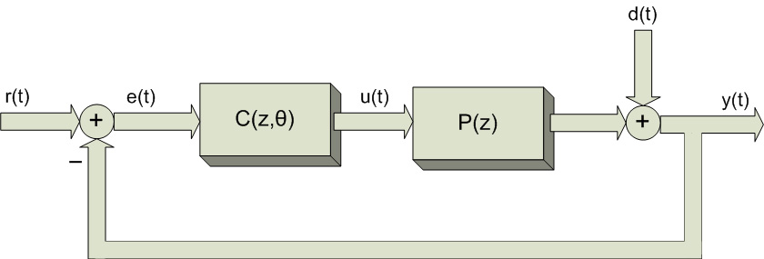

Function: VRFT1_dy
C = VRFT1_dy(u,y,Md,B,W,k,optFilt)
Design a 1 d.o.f. linear controller so as to match the d(t) to y(t) output sensitivity with the model reference Md (see Figure 1).

Figure 1: 1 degree of freedom control scheme.
Inputs (compulsory)- u: column vector (Nx1) that contains the INPUT data collected from the plant.
- y: column vector (Nx1) that contains the OUTPUT data collected from the plant. If y is a Nx2 matrix, the two columns contain the output data collected in 2 different experiments (both experiments are made with the same input u(t); the two noise realizations must be uncorrelated).
- Md: tf-object that represents the discrete transfer function of the reference model. The reference model Md(z) describes the desired closed loop behaviour from the signal d(t) to the output y(t) (output sensitivity).
- B: column vector of tf-objects. The linear controller has the following structure: C(z,θ)= B'*θ, where B is a column vector of transfer functions, and θ is the vector of parameters.
Inputs (optional)
- W: tf-object of the weighting function W(z). If this parameter is empty [], the function automatically sets W(z) = 1.
- k: this parameter must be used only if the measured output y is noisy, and a single experiment is available; in this case this parameter sets the order of an ARX(k,k) model used to make an approximate model of the plant. Otherwise this parameter must be empty: [].
- optFilt: if this parameter is set to 'n', the optimal filter is disabled, and the filter L(z) is set to 1. If this parameter is empty ([]) the function uses the optimal VRFT filter.
Outputs
- C: tf-object, which represents the transfer function of the designed controller.